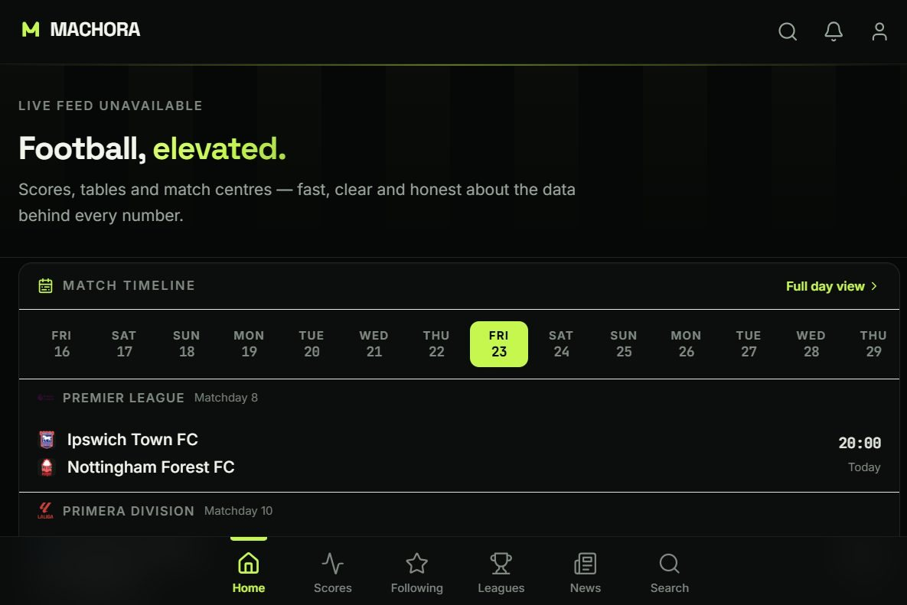

Machora
Football, elevated.
A football platform that brings live scores, match centres, head-to-head history, lineups, tables and news into one fast, honest interface — and never invents a number it doesn't actually have.

Live home screen — match timeline with real fixtures via football-data.org.
01 — The problemFootball apps bury the truth about data
Most football apps look complete even when they aren't. When a data provider is slow, out of quota or missing a stat, they quietly show 0 — a fabricated draw, a made-up 50% possession, an empty lineup presented as confirmed. As a fan, you can't tell real information from filler.
There's also fragmentation: live scores in one app, head-to-head in another, lineups somewhere else, news somewhere else again. I wanted a single match view that is fast, deep and honest — and that tells you exactly where each number came from.
02 — The solutionOne match centre, three providers, zero fabrication
Machora is a Next.js application that aggregates football data from three providers behind a single typed client. It merges them safely across different ID spaces, caches responses in memory, and — when a source fails — falls back to the next one and says so in the UI rather than inventing data.
- Match-centric design. Scores, timeline, stats, lineups, head-to-head and weather in one place.
- Honest states. Missing data shows "data source not connected" — never a fabricated 0.
- Free-tier aware. Caching and opt-in polling protect a 100-request/day quota.
03 — Who it's for
Football fans who want more than a scoreline — people who check fixtures across major leagues, study head-to-head records before a big match, follow predicted and confirmed lineups, and want the numbers to be trustworthy. It's also built for anyone on a budget, since it runs on free-tier infrastructure.
04 — What's built
Working
- Live scoreboard & date navigation
- Match centre: timeline, stats, lineups, H2H
- Head-to-head merged across 3 sources
- Predicted vs confirmed lineups + builder
- League tables with computed form
- Team & player pages with photos
- Multi-source news (BBC & ESPN RSS)
- Auth: credentials + Google sign-in
- Following, calendar, reminders
- Search across teams, players, leagues
In progress
- Browser push notifications (VAPID)
- Goal & kickoff notification poller
- TV schedules & official-broadcaster links
- Transfers (no fees — source has none)
- Predictions with provider probabilities
Planned
- Match Pulse live explainer
- Player comparison lab
- Shareable match cards
- Low-data mode
- Fan match rooms
05 — Technology
06 — Architecture
Next.js App Router with server components doing the data fetching, so API keys never reach the browser. Every provider call goes through a dedicated server-side client with an in-memory TTL cache and stale-if-error behaviour — a slow or failed request serves the last good response instead of breaking the page.
The database is PostgreSQL via Prisma, with a schema covering users, sessions, follows, notification preferences, push subscriptions, reminders, predictions and saved lineups. Auth.js handles credentials (with scrypt hashing) and Google OAuth behind JWT sessions. A middleware redirects non-canonical hosts so OAuth cookies behave correctly in production.
Each provider uses its own ID space. Machora stores the source alongside every ID and resolves them explicitly, so a team from API-Football is never accidentally matched to a same-named team from football-data.org.
07 — Head-to-head historyGetting the deepest record the data allows
Head-to-head is the feature I cared most about. Rather than defaulting to "last 5 matches", Machora merges three sources and lets you filter all / last 10 / last 5:
- API-Football returns the provider's served H2H set for the pairing.
- football-data.org sweeps fixed past seasons (2023–2025) for finished meetings between the two clubs, respecting the free tier's limits.
- TheSportsDB searches its whole archive in both directions — the only source that reaches below football-data.org's floor.
Rows are de-duplicated by fixture and normalised by club name, then a pure computation layer tallies wins, draws and losses by season. Unplayed or unscored matches are never counted as 0–0. Where a provider's history is bounded, the UI says so — I don't imply the record is exhaustive when it isn't.
08 — Challenges
- Free-tier quota. API-Football's free plan allows ~100 requests/day. I added aggressive TTL caching, stale-if-error, and made live polling and the notification poller strictly opt-in via environment variables so a deploy can't silently burn the quota.
- Mismatched ID spaces. Three providers, three numbering schemes. Solved with source-tagged IDs and an explicit resolution layer in the favourites API.
- Edge vs Node runtime. The notification poller needs Node APIs but runs alongside Edge routes. Solved with webpack stubs so the production build succeeds and the poller only starts in production.
- Missing keys at deploy. Rather than crash, the app reads an explicit
API_KEY_MISSINGstate and renders a clear "data source not connected" message.
09 — Results
Machora is deployed and publicly accessible. I don't publish user or usage numbers because I don't have reliable analytics to back them — the figures above are counts of real code, not vanity metrics.
10 — What I learned
- Honesty is a design constraint. Choosing to show "unavailable" instead of 0 shaped the whole data layer — and made the product more trustworthy.
- Free tiers force good engineering. Strict quotas made me design caching, fallbacks and idempotent notifications properly instead of hammering an API.
- Types catch integration bugs early. TypeScript plus Zod meant provider shape mismatches surfaced at the boundary, not in the UI.
11 — Next
Finish browser push so goal and kickoff alerts work reliably, deepen the match centre with a live explainer, and keep widening head-to-head coverage where providers allow it. Longer term I want to add player comparison and shareable match cards — always clearly separated from what already works.
I'm open to full-stack roles, internships and collaborations — especially around data-heavy products, APIs and honest interfaces.
Get in touch